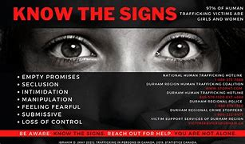
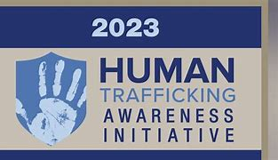
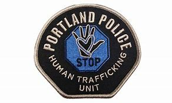

Spreading Awareness
Spreading awareness is important if one wants to implement change. Canada is a democratic country,
how will someone know to vote for someone who will implement change if they dont know that there is something that needs
to be changed? So, to spread awareness a global human trafficking day exists to spread awareness. On the 11th of January
people from all around the world spread awareness about human trafficking on this day. Wether it be a poster, a speech or
a website like this! On January 11th We acknoledge all hose who have been trafficked and we aim to stop it.



Many places outside of Canada also try to combat human trafficking. Portland has its own human trafficking Police unit!